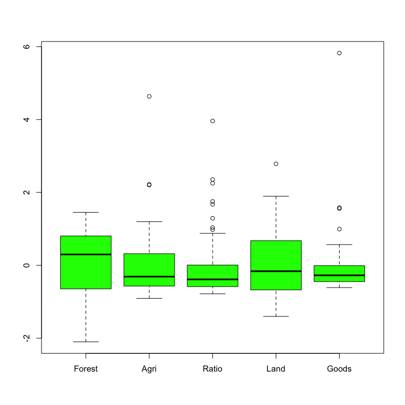

主成分分析
基本的な考え方
(Press ? for help, n and p for next and previous slide)
講義の内容
- 第1日 : 主成分分析の考え方
- 第2日 : 分析の評価と視覚化
主成分分析の考え方
主成分分析
- 多数の変量のもつ情報の分析・視覚化
- 変量を効率的に縮約して少数の特徴量を構成する
- 特徴量に関与する変量間の関係を明らかにする
- PCA (Principal Component Analysis)
- 構成する特徴量 : 主成分 (princial component)
分析の枠組み
- \(X_{1},\dotsc,X_{p}\) : 変数
- \(Z_{1},\dotsc,Z_{d}\) : 特徴量 ( \(d\leq p\) )
変数と特徴量の関係 (線形結合)
\begin{equation} Z_k=a_{1k}X_{1}+\cdots+a_{pk}X_{p}\quad(k=1,\dotsc,d) \end{equation}特徴量は定数倍の任意性があるので以下を仮定
\begin{equation} \|\boldsymbol{a}_k\|^2=\sum_{j=1}^pa_{jk}^2=1 \end{equation}
主成分分析の用語
- 特徴量 \(Z_k\)
- 第 \(k\) 主成分得点 (principal component score)
- 第 \(k\) 主成分
- 係数ベクトル \(\boldsymbol{a}_k\)
- 第 \(k\) 主成分負荷量 (principal component loading)
- 第 \(k\) 主成分方向 (principal component direction)
分析の目的
目的
主成分得点 \(Z_{1},\dots,Z_{d}\) が変数 \(X_{1},\dotsc,X_{p}\) の情報を効率よく反映するように主成分負荷量 \(\boldsymbol{a}_{1},\dotsc,\boldsymbol{a}_{d}\) を観測データから決定する
- 分析の方針 (以下は同値)
- データの情報を最も保持する変量の 線形結合を構成
- データの情報を最も反映する 座標軸を探索
- 教師なし学習 の代表的手法の1つ
- 特徴抽出 : 情報処理に重要な特性を変数に凝集
- 次元縮約 : 入力をできるだけ少ない変数で表現
第1主成分の計算
記号の準備
- 変数 : \(x_{1},\dotsc,x_{p}\) (\(p\)次元)
観測データ : \(n\) 個の \((x_{1},\dotsc,x_{p})\) の組
\begin{equation} \{(x_{i1},\dots,x_{ip})\}_{i=1}^n \end{equation}- ベクトル表現
- \(\boldsymbol{x}_{i}=(x_{i1},\dots,x_{ip})^{\mathsf{T}}\) : \(i\) 番目の観測データ (\(p\) 次元空間内の1点)
- \(\boldsymbol{a}=(a_{1},\dots,a_{p})^{\mathsf{T}}\) : 長さ1の \(p\) 次元ベクトル
係数ベクトルによる射影
データ \(\boldsymbol{x}_{i}\) の \(\boldsymbol{a}\) 方向成分の長さ
\begin{equation} \boldsymbol{a}^{\mathsf{T}}\boldsymbol{x}_{i} \quad\text{(スカラー)} \end{equation}方向ベクトル \(\boldsymbol{a}\) をもつ直線上への点 \(\boldsymbol{x}_{i}\) の直交射影
\begin{equation} (\boldsymbol{a}^{\mathsf{T}}\boldsymbol{x}_{i})\,\boldsymbol{a} \quad\text{(スカラー \(\times\) ベクトル)} \end{equation}
幾何学的描像

Figure 1: 観測データの直交射影 (\(p=2,n=2\) の場合)
ベクトル \(\boldsymbol{a}\) の選択の指針
射影による特徴量の構成
ベクトル \(\boldsymbol{a}\) を うまく 選んで 観測データ \(\boldsymbol{x}_{1},\cdots,\boldsymbol{x}_{n}\) の情報を最も保持する1変量データ \(z_{1},\cdots,z_{n}\)を構成
\begin{equation} z_{1}=\boldsymbol{a}^{\mathsf{T}}\boldsymbol{x}_{1}, z_{2}=\boldsymbol{a}^{\mathsf{T}}\boldsymbol{x}_2, \dotsc, z_{n}=\boldsymbol{a}^{\mathsf{T}}\boldsymbol{x}_n \end{equation}特徴量のばらつきの最大化
観測データの ばらつき を最も反映するベクトル \(\boldsymbol{a}\) を選択
\begin{equation} \arg\max_{\boldsymbol{a}} \sum_{i=1}^n(\boldsymbol{a}^{\mathsf{T}}\boldsymbol{x}_{i} -\boldsymbol{a}^{\mathsf{T}}\bar{\boldsymbol{x}})^2, \quad \bar{\boldsymbol{x}} = \frac{1}{n}\sum_{i=1}^n\boldsymbol{x}_{i}, \end{equation}
ベクトル \(\boldsymbol{a}\) の最適化
最適化問題
制約条件 \(\|\boldsymbol{a}\|=1\) の下で 以下の関数を最大化せよ
\begin{equation} f(\boldsymbol{a}) = \sum_{i=1}^n(\boldsymbol{a}^{\mathsf{T}}\boldsymbol{x}_{i} -\boldsymbol{a}^{\mathsf{T}}\bar{\boldsymbol{x}})^2 \end{equation}- この最大化問題は必ず解をもつ
- \(f(\boldsymbol{a})\) は連続関数
- 集合 \(\{\boldsymbol{a}\in\mathbb{R}^p:\|\boldsymbol{a}\|=1\}\) はコンパクト(有界閉集合)
演習
問題
- 以下の問に答えなさい
評価関数 \(f(\boldsymbol{a})\) を以下の中心化したデータ行列で表しなさい
\begin{equation} X = \begin{pmatrix} \boldsymbol{x}_{1}^{\mathsf{T}}-\bar{\boldsymbol{x}}^{\mathsf{T}} \\ \vdots \\ \boldsymbol{x}_{n}^{\mathsf{T}}-\bar{\boldsymbol{x}}^{\mathsf{T}} \end{pmatrix} = \begin{pmatrix} x_{11}-\bar{x}_{1} & \cdots & x_{1p}-\bar{x}_{p}\\ \vdots & & \vdots \\ x_{n1}-\bar{x}_{1} & \cdots & x_{np}-\bar{x}_{p} \end{pmatrix} \end{equation}上の結果を用いて次の最適化問題の解の条件を求めなさい
\begin{equation} \text{maximize}\quad f(\boldsymbol{a}) \quad\text{s.t.}\quad \boldsymbol{a}^{\mathsf{T}}\boldsymbol{a}=1 \end{equation}
解答例
定義どおりに計算する
\begin{align} f(\boldsymbol{a}) &= \sum_{i=1}^n(\boldsymbol{a}^{\mathsf{T}}\boldsymbol{x}_{i} -\boldsymbol{a}^{\mathsf{T}}\bar{\boldsymbol{x}})^2\\ &= \sum_{i=1}^n (\boldsymbol{a}^{\mathsf{T}}\boldsymbol{x}_{i} -\boldsymbol{a}^{\mathsf{T}}\bar{\boldsymbol{x}}) (\boldsymbol{x}_{i}^{\mathsf{T}}\boldsymbol{a} -\bar{\boldsymbol{x}}\boldsymbol{a}^{\mathsf{T}})\\ &= \boldsymbol{a}^{\mathsf{T}}X^{\mathsf{T}}X\boldsymbol{a} \end{align}- 回帰分析の Gram 行列を参照
制約付き最適化なので未定係数法を用いればよい
\begin{equation} L(\boldsymbol{a},\lambda) =f(\boldsymbol{a})+\lambda(1-\boldsymbol{a}^{\mathsf{T}}\boldsymbol{a}) \end{equation}の鞍点
\begin{equation} \frac{\partial}{\partial\boldsymbol{a}}L(\boldsymbol{a},\lambda) =0 \end{equation}を求めればよいので
\begin{align} 2X^{\mathsf{T}}X\boldsymbol{a}-2\lambda\boldsymbol{a} &=0\\ X^{\mathsf{T}}X\boldsymbol{a} &=\lambda\boldsymbol{a} \quad\text{(固有値問題)} \end{align}
第1主成分の解
ベクトル \(\boldsymbol{a}\) の解
最適化問題
\begin{equation} \text{maximize}\quad f(\boldsymbol{a}) = \boldsymbol{a}^{\mathsf{T}}X^{\mathsf{T}}X\boldsymbol{a} \quad\text{s.t.}\quad \boldsymbol{a}^{\mathsf{T}}\boldsymbol{a}=1 \end{equation}固有値問題
\(f(\boldsymbol{a})\) の極大値を与える \(\boldsymbol{a}\) は \(X^{\mathsf{T}}X\) の固有ベクトルとなる
\begin{equation} X^{\mathsf{T}}X\boldsymbol{a} = \lambda\boldsymbol{a} \end{equation}
第1主成分
固有ベクトル\(\boldsymbol{a}\)に対する\(f(\boldsymbol{a})\) は行列 \(X^{\mathsf{T}}X\) の固有値
\begin{equation} f(\boldsymbol{a}) =\boldsymbol{a}^{\mathsf{T}}X^{\mathsf{T}}X\boldsymbol{a} =\boldsymbol{a}^{\mathsf{T}}\lambda\boldsymbol{a} =\lambda \end{equation}- 求める \(\boldsymbol{a}\) は行列 \(X^{\mathsf{T}}X\) の最大固有ベクトル (長さ1)
- 第1主成分負荷量 : 最大(第一)固有ベクトル \(\boldsymbol{a}\)
第1主成分得点
\begin{equation} z_{i1} =a_{1}x_{i1}+\cdots+a_{p}x_{ip} =\boldsymbol{a}^{\mathsf{T}}\boldsymbol{x}_{i}, \quad(i=1,\dots,n) \end{equation}
Gram 行列の性質
Gram 行列の固有値
- \(X^{\mathsf{T}}X\) は非負定値対称行列
- \(X^{\mathsf{T}}X\) の固有値は0以上の実数
固有値を重複を許して降順に並べる
\begin{equation} \lambda_{1}\geq\dotsb\geq\lambda_{p}\quad(\geq0) \end{equation}固有値 \(\lambda_{k}\) に対する固有ベクトルを \(\boldsymbol{a}_{k}\)(長さ1)とする
\begin{equation} \|\boldsymbol{a}_{k}\|=1, \quad (k=1,\dotsc,p) \end{equation}
Gram 行列のスペクトル分解
\(\boldsymbol{a}_{1},\dotsc,\boldsymbol{a}_{p}\) は 互いに直交 するようとることができる
\begin{equation} j\neq k \quad\Rightarrow\quad \boldsymbol{a}_{j}^{\mathsf{T}}\boldsymbol{a}_k=0 \end{equation}行列 \(X^{\mathsf{T}}X\) (非負定値対称行列) のスペクトル分解
\begin{align} X^{\mathsf{T}}X &=\lambda_{1}\boldsymbol{a}_{1}\boldsymbol{a}_{1}^{\mathsf{T}}+ \lambda_{2}\boldsymbol{a}_{2}\boldsymbol{a}_{2}^{\mathsf{T}}+ \dotsb+\lambda_{p}\boldsymbol{a}_{p}\boldsymbol{a}_{p}^{\mathsf{T}}\\ &=\sum_{k=1}^{p}\lambda_{k}\boldsymbol{a}_{k}\boldsymbol{a}_{k}^{\mathsf{T}} \end{align}- 固有値と固有ベクトルによる行列の表現
演習
問題
- 以下の問に答えなさい
Gram 行列のスペクトル分解において \(\lambda_{j}\) と \(\boldsymbol{a}_{j}\) が固有値・固有ベクトルとなることを確かめなさい
\begin{equation} X^{\mathsf{T}}X =\sum_{k=1}^{p}\lambda_{k}\boldsymbol{a}_{k}\boldsymbol{a}_{k}^{\mathsf{T}} \end{equation}以下の行列を用いて Gram 行列のスペクトル分解を書き直しなさい
\begin{equation} A = \begin{pmatrix} \boldsymbol{a}_{1}^{\mathsf{T}}\\ \vdots \\ \boldsymbol{a}_{p}^{\mathsf{T}} \end{pmatrix}, \quad \Lambda = \begin{pmatrix} \lambda_{1} & 0 & \dotsm & 0\\ 0 & \lambda_{2} & \dotsm & 0\\ 0 & 0 & \ddots & 0\\ 0 & 0 & \dotsm & \lambda_{p}\\ \end{pmatrix} \end{equation}
解答例
固有ベクトルの直交性に注意する
\begin{align} X^{\mathsf{T}}X\boldsymbol{a}_{j} &=\sum_{k=1}^{p}\lambda_{k}\boldsymbol{a}_{k}\boldsymbol{a}_{k}^{\mathsf{T}}\boldsymbol{a}_{j} &&\text{(直交性)}\\ &=\lambda_{j}\boldsymbol{a}_{j}\boldsymbol{a}_{j}^{\mathsf{T}}\boldsymbol{a}_{j} &&\text{(単位ベクトル)}\\ &=\lambda_{j}\boldsymbol{a}_{j} \end{align}
転置に注意して計算する
\begin{equation} X^{\mathsf{T}}X = A^{\mathsf{T}}\Lambda A \end{equation}
第2主成分以降の計算
第2主成分の考え方
- 第1主成分
- 主成分負荷量 : ベクトル \(\boldsymbol{a}_{1}\)
- 主成分得点 : \(\boldsymbol{a}_{1}^{\mathsf{T}}\boldsymbol{x}_{i}\) (\(i=1,\dotsc,n\))
第1主成分負荷量に関してデータが有する情報
\begin{equation} (\boldsymbol{a}_{1}^{\mathsf{T}}\boldsymbol{x}_{i})\,\boldsymbol{a}_{1} \quad(i=1,\dotsc,n) \end{equation}第1主成分を取り除いた観測データ (分析対象)
\begin{equation} \tilde{\boldsymbol{x}}_{i} = \boldsymbol{x}_{i} -(\boldsymbol{a}_{1}^{\mathsf{T}}\boldsymbol{x}_{i})\,\boldsymbol{a}_{1} \quad(i=1,\dotsc,n) \end{equation}
第2主成分の最適化
最適化問題
制約条件 \(\|\boldsymbol{a}\|=1\) の下で 以下の関数を最大化せよ
\begin{equation} \tilde{f}(\boldsymbol{a}) = \sum_{i=1}^n(\boldsymbol{a}^{\mathsf{T}}\tilde{\boldsymbol{x}}_{i} -\boldsymbol{a}^{\mathsf{T}}\bar{\tilde{\boldsymbol{x}}})^2 \quad\text{ただし}\quad \bar{\tilde{\boldsymbol{x}}} = \frac{1}{n}\sum_{i=1}^n\tilde{\boldsymbol{x}}_{i} \end{equation}
演習
問題
- 以下の問に答えなさい
以下の中心化したデータ行列を \(X\) と \(\boldsymbol{a}_{1}\) で表しなさい
\begin{equation} \tilde{X} = \begin{pmatrix} \tilde{\boldsymbol{x}}_{1}^{\mathsf{T}}-\bar{\tilde{\boldsymbol{x}}}^{\mathsf{T}} \\ \vdots \\ \tilde{\boldsymbol{x}}_{n}^{\mathsf{T}}-\bar{\tilde{\boldsymbol{x}}}^{\mathsf{T}} \end{pmatrix} \end{equation}上の結果を用いて 次の最適化問題の解を求めなさい
\begin{equation} \text{maximize}\quad \tilde{f}(\boldsymbol{a}) \quad\text{s.t.}\quad \boldsymbol{a}^{\mathsf{T}}\boldsymbol{a}=1 \end{equation}
解答例
定義どおりに計算する
\begin{equation} \tilde{X} = \begin{pmatrix} \tilde{\boldsymbol{x}}_{1}^{\mathsf{T}}-\bar{\tilde{\boldsymbol{x}}}^{\mathsf{T}} \\ \vdots \\ \tilde{\boldsymbol{x}}_{n}^{\mathsf{T}}-\bar{\tilde{\boldsymbol{x}}}^{\mathsf{T}} \end{pmatrix} = X-X\boldsymbol{a}_{1}\boldsymbol{a}_{1}^{\mathsf{T}} \end{equation}
Gram 行列 \(\tilde{X}^{\mathsf{T}}\tilde{X}\) を計算する
\begin{align} \tilde{X}^{\mathsf{T}}\tilde{X} &= (X-X\boldsymbol{a}_{1}\boldsymbol{a}_{1}^{\mathsf{T}})^{\mathsf{T}} (X-X\boldsymbol{a}_{1}\boldsymbol{a}_{1}^{\mathsf{T}})\\ &= X^{\mathsf{T}}X -X^{\mathsf{T}}X\boldsymbol{a}_{1}\boldsymbol{a}_{1}^{\mathsf{T}} -\boldsymbol{a}_{1}\boldsymbol{a}_{1}^{\mathsf{T}}X^{\mathsf{T}}X +\boldsymbol{a}_{1}\boldsymbol{a}_{1}^{\mathsf{T}}X^{\mathsf{T}}X\boldsymbol{a}_{1}\boldsymbol{a}_{1}^{\mathsf{T}}\\ &= X^{\mathsf{T}}X-\lambda_{1}\boldsymbol{a}_{1}\boldsymbol{a}_{1}^{\mathsf{T}}\\ &= \sum_{k=2}^{p}\lambda_{k}\boldsymbol{a}_{k}\boldsymbol{a}_{k}^{\mathsf{T}} \end{align}元の Gram 行列 \(X^{\mathsf{T}}X\) の固有ベクトル \(\boldsymbol{a}_{1}\) の固有値が0となっていると考えることができる
第2主成分以降の解
第2主成分
Gram 行列 \(\tilde{X}^{\mathsf{T}}\tilde{X}\) の固有ベクトル \(\boldsymbol{a}_{1}\) の固有値は 0
\begin{equation} \tilde{X}^{\mathsf{T}}\tilde{X}\boldsymbol{a}_{1} = 0 \end{equation}- Gram 行列 \(\tilde{X}^{\mathsf{T}}\tilde{X}\) の最大固有値は \(\lambda_2\)
- 解は第2固有値 \(\lambda_2\) に対応する固有ベクトル \(\boldsymbol{a}_2\)
- 以下同様に 第 \(k\) 主成分負荷量は \(X^{\mathsf{T}}X\) の第 \(k\) 固有値 \(\lambda_k\) に対応する固有ベクトル \(\boldsymbol{a}_k\)
解析の事例
データセットについて
- 総務省統計局より取得した都道府県別の社会生活統計指標(自然環境・経済基盤)の一部
- 総務省 https://www.e-stat.go.jp/SG1/estat/List.do?bid=000001083999&cycode=0
データ https://noboru-murata.github.io/multivariate-analysis/data/japan_social.csv
- Pref : 都道府県名
- Forest : 森林面積割合 (%) 2014年
- Agri : 就業者１人当たり農業産出額(販売農家）(万円) 2014年
- Ratio : 全国総人口に占める人口割合 (%) 2015年
- Land : 土地生産性（耕地面積１ヘクタール当たり）(万円) 2014年
- Goods : 商業年間商品販売額［卸売業＋小売業］（事業所当たり）(百万円) 2013年
- Area : 地方区分
社会生活統計指標の分析
データ(の一部)の内容
社会生活統計指標 Pref Forest Agri Ratio Land Goods Area Hokkaido 67.9 1150.6 4.23 96.8 283.3 Hokkaido Aomori 63.8 444.7 1.03 186 183 Tohoku Iwate 74.9 334.3 1.01 155.2 179.4 Tohoku Miyagi 55.9 299.9 1.84 125.3 365.9 Tohoku Akita 70.5 268.7 0.81 98.5 153.3 Tohoku Yamagata 68.7 396.3 0.88 174.1 157.5 Tohoku Fukushima 67.9 236.4 1.51 127.1 184.5 Tohoku Ibaraki 31 479 2.3 249.1 204.9 Kanto Tochigi 53.2 402.6 1.55 199.6 204.3 Kanto Gumma 63.8 530.6 1.55 321.6 270 Kanto Saitama 31.9 324.7 5.72 247 244.7 Kanto Chiba 30.4 565.5 4.9 326.1 219.7 Kanto Tokyo 34.8 268.5 10.63 404.7 1062.6 Kanto Kanagawa 38.8 322.8 7.18 396.4 246.1 Kanto Niigata 63.5 308.6 1.81 141.9 205.5 Chubu
データの散布図

Figure 2: 散布図
データの箱ひげ図

Figure 3: 箱ひげ図
正規化したデータ(の一部)
社会生活統計指標 Pref Forest Agri Ratio Land Goods Area Hokkaido 0.425 4.63 0.979 -1.4 0.421 Hokkaido Aomori 0.151 0.489 -0.512 -0.446 -0.274 Tohoku Iwate 0.892 -0.159 -0.521 -0.776 -0.299 Tohoku Miyagi -0.376 -0.361 -0.134 -1.1 0.993 Tohoku Akita 0.599 -0.544 -0.614 -1.38 -0.48 Tohoku Yamagata 0.479 0.205 -0.581 -0.574 -0.451 Tohoku Fukushima 0.425 -0.734 -0.288 -1.08 -0.264 Tohoku Ibaraki -2.04 0.691 0.0801 0.229 -0.123 Kanto Tochigi -0.556 0.242 -0.269 -0.301 -0.127 Kanto Gumma 0.151 0.994 -0.269 1.01 0.329 Kanto Saitama -1.98 -0.215 1.67 0.207 0.153 Kanto Chiba -2.08 1.2 1.29 1.05 -0.02 Kanto Tokyo -1.78 -0.546 3.96 1.9 5.82 Kanto Kanagawa -1.52 -0.227 2.35 1.81 0.163 Kanto Niigata 0.131 -0.31 -0.148 -0.918 -0.118 Chubu
正規化したデータの箱ひげ図

Figure 4: 箱ひげ図 (データを正規化)
主成分負荷量を計算 (正規化後)
PC1 PC2 PC3 PC4 PC5 Forest -0.487 0.105 -0.457 0.686 -0.268 Agri 0.134 0.812 0.479 0.305 0.035 Ratio 0.585 -0.151 0.045 0.164 -0.778 Land 0.355 0.485 -0.742 -0.290 0.069 Goods 0.526 -0.269 -0.095 0.571 0.562 - 主成分方向から読み取れること
- 第1 : 人の多さに関する成分(正の向きほど人が多い)
- 第2 : 農業生産力に関する成分(正の向きほど高い)
主成分得点の表示

Figure 5: 主成分得点による散布図
次回の予定
- 第1日 : 主成分分析の考え方
- 第2日 : 分析の評価と視覚化